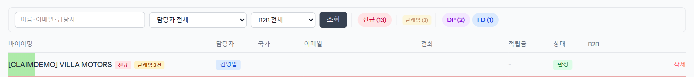
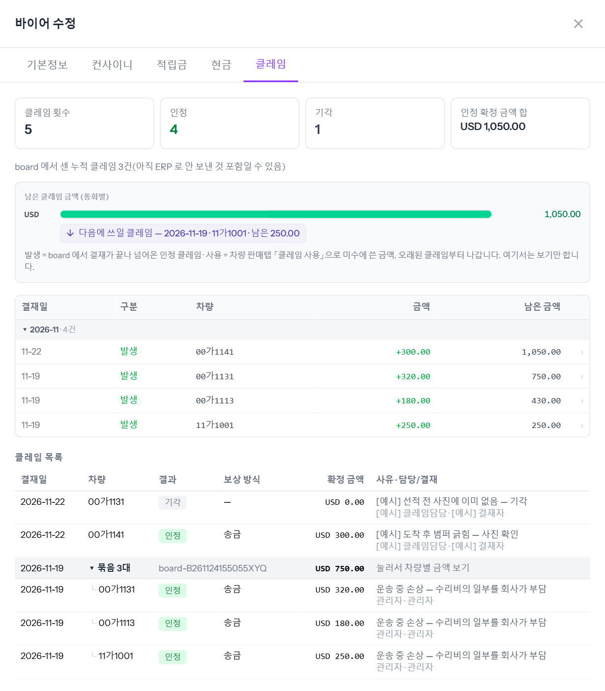
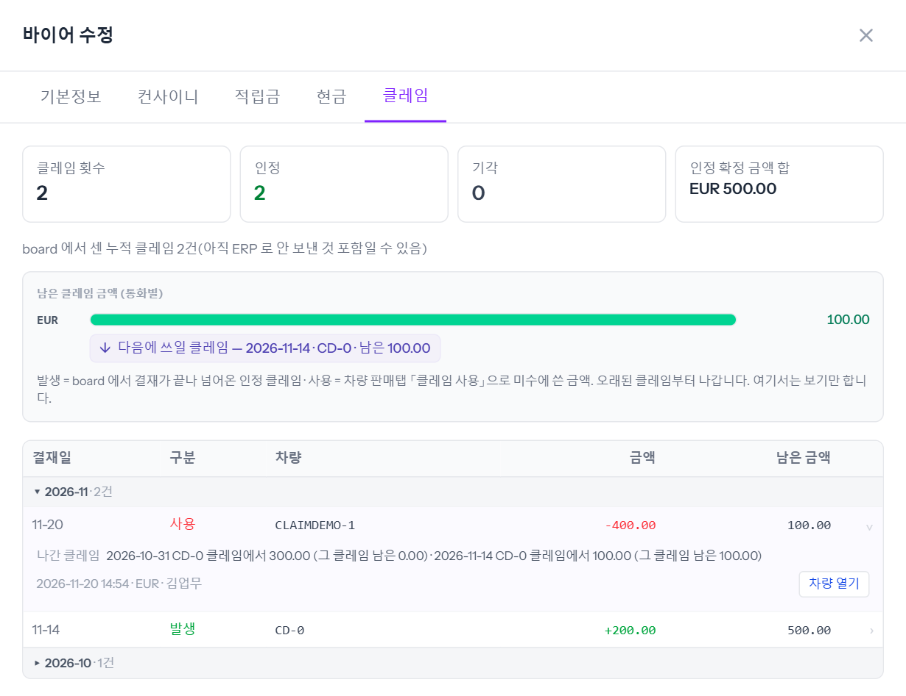
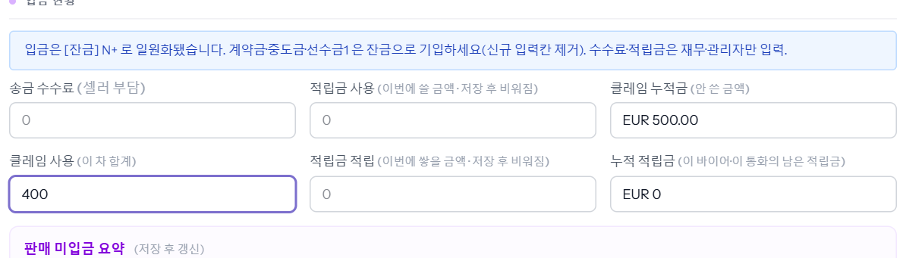

바이어 클레임은 board 클레임 탭에서 접수하고 판정(인정 · 기각)하고 결재합니다. 결재가 끝나면 클레임 담당자가 board 에서 [ERP 로 보내기]를 누르고, 그 결과가 ERP 바이어 창의 「클레임」 탭에 쌓입니다. ERP 에서는 바이어별 클레임 기록을 보고, 인정된 금액만큼 바이어가 다음 차 대금을 덜 보냈을 때 그 차의 미수를 「클레임 사용」으로 텁니다. 여기서 인정 · 기각을 바꾸지는 않습니다. 예시 클레임은 가짜입니다.
① 클레임 기록 보기
1단계
바이어 목록에서 「클레임 N건」 뱃지가 붙은 바이어를 찾습니다
인정된 클레임 중 아직 쓰지 않은 금액이 남아 있는 바이어 이름 옆에 「클레임 N건」이 붙습니다. 검색줄의 같은 모양 「클레임」 뱃지를 누르면 그런 바이어만 추려 보고, 다시 누르면 풀립니다. 남은 금액을 다 쓰면 뱃지가 사라집니다.

2단계
바이어를 눌러 열고 → 「클레임」 탭
위 네 칸이 그 바이어의 클레임 횟수 · 인정 · 기각 · 인정 확정 금액 합(통화별)입니다. 그 아래 회색 상자와 표가 남은 금액과 발생 · 사용 내역이고(3단계), 맨 아래 「클레임 목록」은 클레임 한 건에 한 줄 — 결재일 · 차량 · 결과 · 보상 방식(송금 · 차감) · 확정 금액 · 사유와 담당 · 결재자입니다. 기각은 확정 금액이 0 으로 들어옵니다. 사유가 길어 잘린 줄은 마우스를 올리면 전부 보입니다.

- 「board 에서 센 누적 클레임 N건」은 board 가 그 바이어에 대해 센 수입니다. 아직 결재 중이라 ERP 로 안 넘어온 클레임이 있으면 위 「클레임 횟수」보다 클 수 있습니다.
- 묶음 — board 에서 같은 바이어의 클레임 여러 건을 골라 한 번에 보내면 회색 머리 줄 하나(「묶음 N대」 · 묶음 번호 · 합계)로 보입니다. 머리 줄을 누르면 차량별 금액 줄이 펼쳐지고, 다시 누르면 접힙니다. 위 네 칸의 횟수 · 금액 합은 묶음 안의 차량을 한 건씩 셉니다.
- board 에서 판정을 고쳐 다시 보내면 같은 줄이 새 내용으로 바뀝니다(줄이 늘지 않습니다). 묶음 안의 한 건을 고쳐 보내도 그 줄만 바뀌고 묶음에 남으며, 합계는 자동으로 다시 더해집니다.
3단계
남은 금액과 발생 · 사용 내역을 봅니다
네 칸 아래 회색 상자가 통화별로 아직 안 쓴 클레임 금액입니다. 바로 밑 「다음에 쓰일 클레임」은 다음 번 「클레임 사용」 때 먼저 빠질 클레임(결재일 · 차량 · 그 클레임에 남은 금액)입니다. 그 아래 표는 달마다 묶은 내역입니다 — 「발생」(초록, +)은 board 에서 결재가 끝나 넘어온 인정 클레임, 「사용」(빨강, −)은 차량 판매 탭에서 미수에 쓴 금액이고, 오른쪽 「남은 금액」이 그 줄까지의 잔액입니다.

- 가장 최근 달만 펼쳐져 있습니다. 달 머리 줄(예: 2026-10 · 1건)을 누르면 그 달이 펼쳐지고, 다시 누르면 접힙니다.
- 줄을 누르면 자세한 내용이 열립니다. 「사용」 줄은 어느 클레임에서 얼마씩 나갔는지(오래된 클레임부터)와 넣은 사람 · 시각이 나오고, 「발생」 줄은 그 클레임에서 쓴 금액 · 남은 금액이 나옵니다. 열린 줄의 [차량 열기]를 누르면 그 차가 차량 관리에서 바로 열립니다.
- 여기서는 보기만 합니다. 클레임을 쓰거나 되돌리는 것은 그 차의 판매 탭 「클레임 사용」에서 합니다(4단계).
- 기각된 클레임은 이 내역에 나오지 않습니다(아래 「클레임 목록」에는 나옵니다). 인정된 클레임이 한 건도 없는 바이어는 상자와 표가 보이지 않습니다.
② 클레임 사용 — 다음 차 미수에서 털기
4단계
바이어가 클레임만큼 덜 보낸 차의 판매 탭 → 「클레임 사용」에 금액
예: 클레임 400 유로가 인정된 바이어가 다음 차 대금 10,000 유로 중 9,600 만 보냈습니다. 그 차에 미수 400 이 남습니다. 차량 관리에서 그 차를 열고 판매 탭의 「클레임 사용」에 400 을 넣고 [수정 저장]을 누릅니다.

- 클레임 누적금 = 그 바이어의 인정된 클레임 중 아직 안 쓴 돈(그 차와 같은 통화만). 누적금도 쓴 금액도 없는 차에는 두 칸이 보이지 않습니다.
- 클레임 사용 = 이 차에 쓴 합계입니다. 왼쪽의 「적립금 사용」처럼 더하는 칸이 아닙니다 — 400 을 300 으로 고치면 300 만 쓴 것이 되고, 0 으로 저장하면 전부 되돌아갑니다.
- 누적금보다 많이, 또는 그 차의 남은 미수보다 많이는 쓸 수 없습니다. 일부만 써도 됩니다. 클레임이 여러 건이면 오래된 것부터 빠집니다.
5단계
채권관리에 「상계 · 클레임」 줄이 자동으로 생기고 미수가 줄어듭니다
저장하면 그 차의 미수가 쓴 만큼 줄고, 채권관리 그 차의 회수 이력에 상계 줄이 「클레임」 표시와 함께 생깁니다. 바이어의 클레임 누적금도 그만큼 줄어들고, 바이어 창 클레임 탭의 내역에 「사용」 줄이 생깁니다.
- 이 줄은 채권관리에서 고치거나 지울 수 없습니다. 「판매탭에서 수정 →」을 누르면 그 차의 판매 탭이 바로 열립니다.
- 채권관리에서 차량 번호 아래 「차량 판매탭 열기 →」를 누르면 어느 차든 판매 탭으로 바로 갑니다.
- 정산이 마감된 차라도 미수가 남아 있으면 클레임 사용을 넣을 수 있습니다.
알아 둘 것
- 클레임 사용은 그 차의 미수만 줄입니다. 담당자 정산 금액과 마진은 바뀌지 않습니다(회사가 부담합니다).
- 클레임을 쓴 차는 바이어와 통화를 바꿀 수 없습니다. 바꾸려면 먼저 「클레임 사용」을 0 으로 저장합니다.
- 판매 탭에서 이미 「클레임 사용」으로 쓴 클레임은 board 에서 금액 · 결과를 고쳐 다시 보내도 ERP 가 받지 않습니다(쓴 금액이 확정 금액보다 커지지 않게). ERP 로 보낸 금액이 확정 금액입니다.
- 바이어에게 해외 송금으로 돌려주는 경우는 ERP 에 따로 넣는 칸이 없습니다 — 지금까지 하던 회사 절차대로 처리합니다.
- ERP 에서 바이어를 정하지 않은 차의 클레임은 넘어오지 않습니다 — board 에 「ERP 에서 이 차의 바이어를 먼저 정해 주세요」가 뜹니다. 차량 판매 탭에서 바이어를 넣은 뒤 board 에서 다시 보냅니다.
- 클레임 횟수 · 금액은 바이어를 믿고 거래해도 되는지 볼 때도 씁니다.